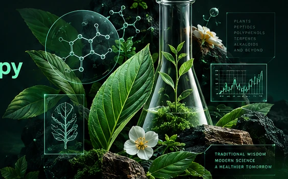
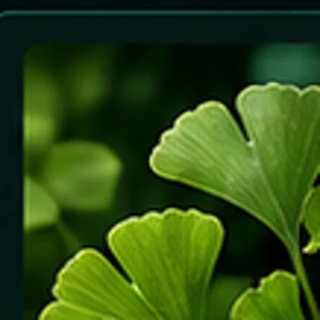
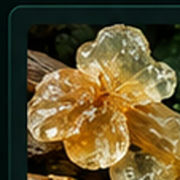

LÍNEA EXPLORATORIA
Bienestar inflamatorio
Estudio de compuestos botánicos y su potencial papel en procesos fisiológicos asociados al bienestar.
POLIFENOLESBOTÁNICAInvestigamos el potencial de plantas, algas y compuestos naturales para desarrollar suplementos alimenticios respaldados por evidencia científica, con un modelo de financiación y participación tokenizada.

En PYTHO Labs buscamos identificar compuestos naturales prometedores, comprender sus mecanismos y desarrollar formulaciones seguras, estandarizadas y sometidas a evaluación científica.
Exploraremos plantas terrestres y especies marinas, incluyendo macroalgas como Macrocystis pyrifera, bajo criterios de sostenibilidad, trazabilidad y cumplimiento regulatorio.
Los suplementos proyectados no buscan reemplazar terapias médicas ni atribuirse efectos curativos sin evidencia y autorizaciones aplicables.
Áreas ilustrativas que deberán seleccionarse mediante revisión de evidencia, viabilidad y evaluación científica. No representan fórmulas aprobadas ni resultados clínicos.
Estudio de compuestos botánicos y su potencial papel en procesos fisiológicos asociados al bienestar.
POLIFENOLESBOTÁNICA
Exploración de plantas, algas y compuestos naturales relacionados con funciones metabólicas.
PLANTASALGAS
Investigación de formulaciones potenciales orientadas al bienestar y a la calidad de vida.
FORMULACIÓNSEGURIDADPYTHO está concebido como un mecanismo de financiación y participación en decisiones relevantes del laboratorio. La eventual distribución de beneficios económicos dependerá de derechos contractuales definidos, ventas reales y cumplimiento de la regulación aplicable.
Propuesta de votaciones sobre prioridades de investigación y decisiones relevantes, según reglas de gobierno por establecer.
Recursos destinados a exploración, diseño de fórmulas, toxicología, validación y lanzamiento de productos.
La participación proyectada se calcularía con base en el desempeño económico definido por contrato, no en el precio especulativo del token.
Importante: PYTHO todavía se presenta como un concepto de proyecto. Esta web no constituye oferta pública de valores, promesa de rentabilidad ni invitación a transferir dinero. No hay venta de tokens ni conexión de billeteras habilitada.
Una ruta de desarrollo por etapas con validaciones de seguridad, calidad y evidencia antes de cualquier lanzamiento comercial.
Evaluación de dolencias y oportunidades de bienestar según evidencia y prioridades.
FASE 1Selección, caracterización y análisis de compuestos naturales candidatos.
FASE 2Investigación de dosis, interacciones, estandarización y factibilidad.
FASE 3Evaluaciones para identificar riesgos y verificar condiciones de consumo.
FASE 4Estudios según las hipótesis, las exigencias regulatorias y la viabilidad científica.
FASE 5Fabricación y comercialización solo después de cumplir los requisitos aplicables.
META: AÑO 2PYTHO busca desarrollar suplementos de costo de producción eficiente para mercados internacionales. Los siguientes escenarios son supuestos de modelación, no previsiones de venta.
Ingresos brutos hipotéticos con precios de venta entre US$8 y US$20 por unidad.
Ingresos brutos hipotéticos con los mismos precios de referencia.
Supuestos: producción aproximada de US$1 por frasco, sin incluir formulación, ensayos, calidad, distribución, logística, publicidad, impuestos, devoluciones ni gastos generales. Los ingresos brutos no equivalen a utilidad ni determinan un pago a los tenedores de PYTHO. La tasa y base de distribución no están definidas.
PYTHO es el nombre de nuestro ecosistema científico y de su token. Se inspira en «fito», del griego phytón («planta»), raíz presente en términos como fitoterapia y fitoquímica. Representa el encuentro entre investigación botánica, innovación y ciencia aplicada.
PYTHO no tiene relación con Python, el lenguaje de programación, ni representa una tecnología oficial de ese ecosistema. Es una identidad propia de PYTHO Labs.
El modelo propuesto distingue el precio de mercado del token de los resultados económicos distribuidos. La fórmula, los derechos y el porcentaje se definirán en documentación legal. La cotización del token puede variar de forma independiente.
No. PYTHO Labs plantea investigar suplementos como alternativas de bienestar o posibles complementos, sin sustituir tratamientos médicos ni afirmar propiedades terapéuticas no demostradas.
La meta del proyecto es obtener el primer producto durante el segundo año de financiación, sujeto a resultados científicos, toxicología, validación, fabricación y aprobaciones correspondientes.
No. Esta es una página de presentación conceptual. La tokenización, los derechos de sus participantes y cualquier mecanismo de emisión requieren definición técnica y jurídica previa.
El whitepaper de PYTHO Labs ya está disponible para consulta. Leer whitepaper completo ↗. El documento presenta la visión científica, el modelo propuesto del token, el roadmap y los riesgos del proyecto.
Nuestro whitepaper ya está disponible. Conoce el enfoque científico, la propuesta de gobernanza, los escenarios comerciales y los riesgos de PYTHO Labs.
Leer whitepaper completo ↗